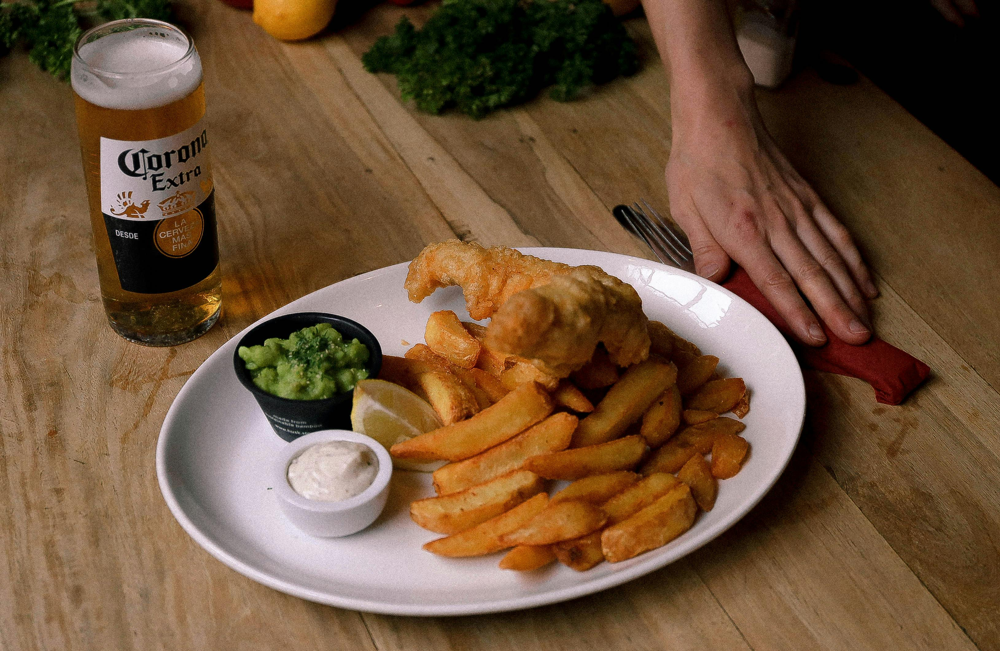

Fish & Chips
Description
Fish and chips is a beloved British dish that features crispy, golden-battered fish fillets served alongside thick-cut fries, known as chips in the UK. The fish—usually cod or haddock—is dipped in a light, seasoned batter and deep-fried until perfectly crunchy on the outside and tender on the inside. The chips are traditionally thick, soft on the inside, and slightly crisp on the outside, making them the perfect partner for the fish. Often served with tartar sauce, mushy peas, and a wedge of lemon, fish and chips is a comforting, hearty meal that’s both simple and satisfying, with a long-standing place in classic pub and seaside cuisine.
Ingredients
- salt & pepper
- fish fillet
- Lettuce
- all purpose flour
- Baking powder
- Cold sparkling water
- russet potatoes
- vegetable oil
- salt
Steps to cook
- Prep the chips
- First fry for chips
- Prepare fish batter
- Fry fish
- second fry chips
- serve